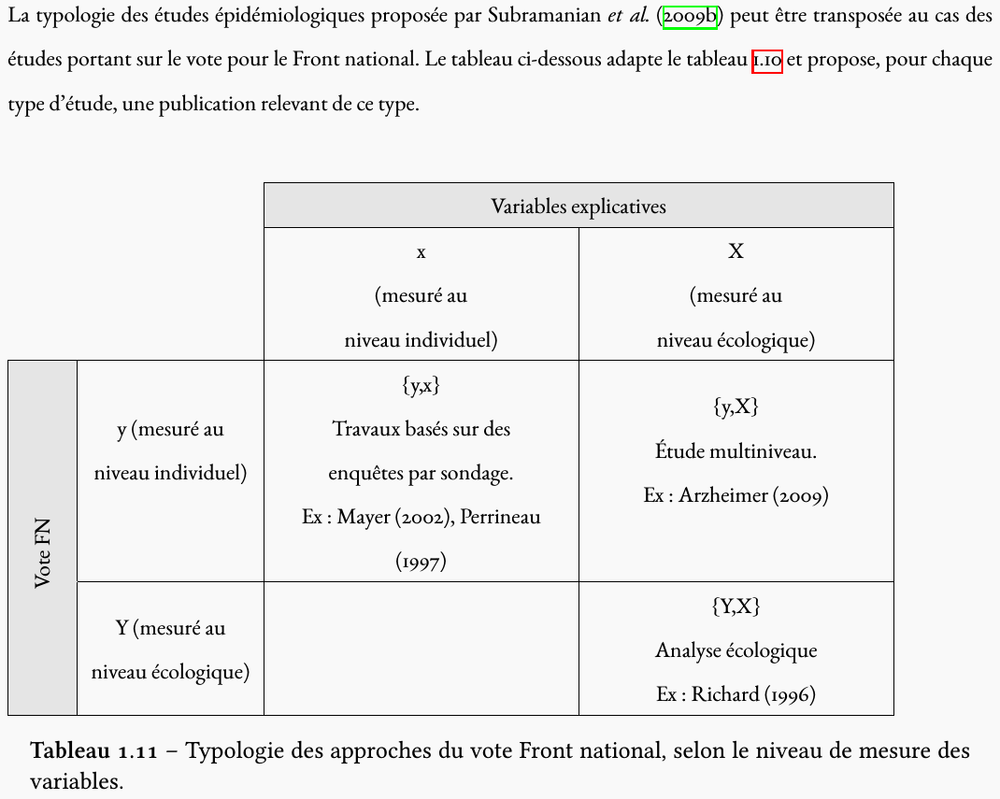

10 février 2016
| Approche | Unité | Caractéristiques | Niveau électoral |
|---|---|---|---|
| Écologique | Collectif | géo, sociales, politiques | votes agrégés |
| Individuelle | Individu | personnelles, comportementales | votes individuels |
| Mixte | Individu | idem + contextes | votes individuels et agrégés |
(source : Mayer, 2010)

Sources de données disponibles :
Conclusions : - pertinence du clivage organisateur gauche-droite - grande permanence des comportements électoraux - importance de la géographie humaine pour comprendre le vote
Le cas de la Vendée : "le granite produit le curé et le calcaire l'instituteur" (d'après Mayer, Perrineau, 1992)
(d'après Lehingue, 2011)
(d'après Lehingue, 2011)
| Géographie | Bocage | Plaine |
|---|---|---|
| Géologie | Granit | Calcaire |
| Densité démographique | Faible | Forte |
| Relations sociales | Très intermittentes | Fréquentes |
| - | Penchants autarciques | Forte sociabilité |
| Régime de propriété foncière | Concentrée (nobles ou bourgeoisie) | Morcelée (petite et moyenne) |
| Exploitations agricoles | Fermiers, métayers dépendants | Petits propriétaires indépendants |
| Cléricalisme | Puissant | Faible |
| Structure sociale | Hiérarchique, féodale | Démocratie égalitaire |
| Votes | Droite | Gauche |
Paysans de l'Ouest (1960)
Cas de la Sarthe, divisée en deux (Ouest conservateur, Est progressiste) selon une ligne qui ne correspond ni à la géographie physique ni humaine
Modèle du traumatisme historique : vente des biens nationaux sous la Révolution
Paysans de l'Ouest frustrés, paysans de l'est plus liés à la ville et à l'activité artisanale
Reste le mystère de la continuité des comportements…